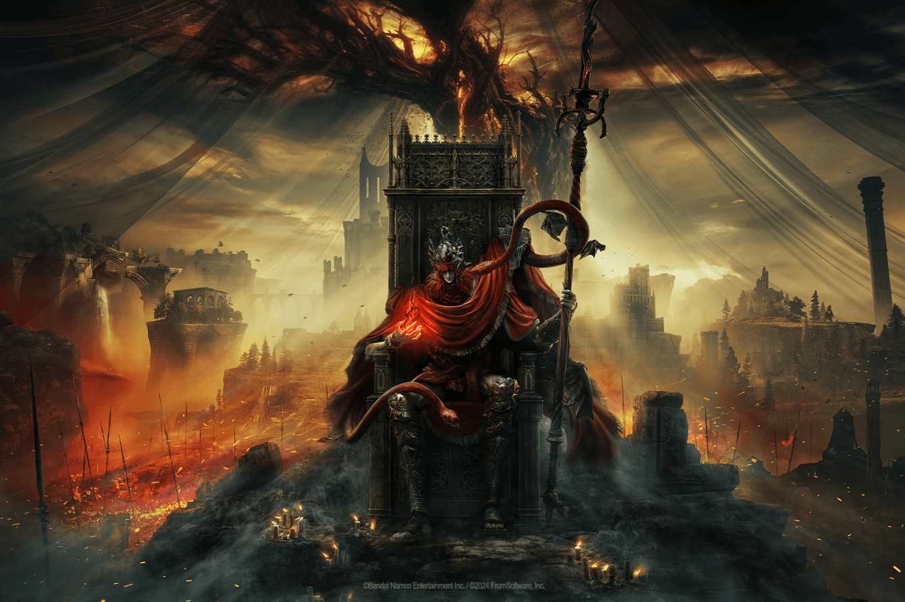

A Paixão por Jogos Desafiadores
Quando não estou estudando programação ou praticando meu inglês, minha maior paixão é jogar videogames. Gosto especialmente dos jogos dirigidos por Hidetaka Miyazaki.

Fonte: Imagem ilustrativa retirada da internet.
Minha jornada no Elden Ring
Um dos meus maiores orgulhos como jogador foi ter conquistado o troféu de platina no Elden Ring. Dediquei mais de 100 horas explorando cada detalhe do universo do jogo!
A franquia Dark Souls também tem um espaço especial na minha lista de favoritos. Esses jogos me ensinaram muito sobre resiliência e a não desistir nos primeiros erros — uma lição que aplico até quando estou tentando resolver um "bug" (erro) no meu código de programação!